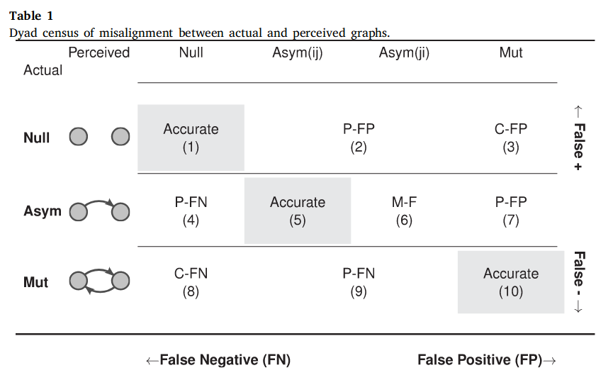

8 Odd balls
Many times the existing methods are not enough to answer the questions we have. Most of the time, non-parametric statistics are the answer. In this section, we will discuss some of the cases where we had to use non-parametric statistics.
8.1 Non-parametric statistics
Non-parametric statistics are statistical methods in which parametric assumptions such as probability function or model parameters are not made. In other words, non-parametric statistics are distribution-free methods. With many non-parametric methods, simulation-based methods are the most commonly used. The following papers show a couple of examples using non-parametric methods applied to network inference problems.
8.3 Case 2: Imaginary motifs
In Tanaka and Vega Yon (2024), we study the prevalence of perception-based network motifs. While the ERGM framework would be a natural choice, as a first approach, we used non-parametric tests for hypothesis testing. The rest of this section is a reproduction of the methods section of the paper:

The process can be described as follows:
\begin{equation} \text{Pr}\left(\left.\vphantom{t_{ij} = 1}p_{ij} = 1\right|t_{ij} = 1\right) = \left\{\begin{array}{ll}% |\sum_{\oplus(k)}t_{nm}|^{-1}\sum_{\oplus(k)}p_{nm}t_{nm} &\text{if}\; k \in \{i, j\} \\ |\sum_{\oplus(k)^{\complement}}t_{nm}|^{-1}\sum_{\oplus(k)^\complement}p_{nm}t_{nm} &\text{otherwise}, \end{array}\right. \end{equation}
\begin{equation} \text{Pr}\left(\left.\vphantom{t_{ij} = 0}p_{ij} = 0\right|t_{ij} = 0\right) = \left\{\begin{array}{ll}% |\sum_{\oplus(k)}(1-t_{nm})|^{-1}\sum_{\oplus(k)}(1-p_{nm}t_{nm}) &\text{if}\; k \in \{i, j\} \\ |\sum_{\oplus(k)^{\complement}}(1-t_{nm})|^{-1}\sum_{\oplus(k)^\complement}(1-p_{nm}t_{nm}) &\text{otherwise}, \end{array}\right. \end{equation}
where, \oplus(k) \equiv \left\{(m,n) : (m = k) \oplus (n = k)\right\} is the set of ties involving k, and \oplus(k)^\complement is its complement.
Each sampled perceived graph was \mathbf{P}^b_l–-th sampled graph for each individual . We then counted the dyadic imaginary network motifs, \tau_l^b \equiv s\left(\mathbf{T}, \mathbf{P}^b\right); the same was done to the observed graphs, \hat{\tau}_l \equiv s\left(\mathbf{T}, \mathbf{P}\right). Finally, we calculated a -value using the equal-tail nonparametric test drawing B = 2,000 samples recommend 1,000 minimum) from the null distribution, comparing the observed imaginary motif counts, \hat\tau_l, and what we would expect to see by chance, \{\tau^b_l\}_{b=1}^B:
\begin{equation} \hat{p}(\hat{\tau_l}) = 2\times \min\left[\frac{1}{B}\sum_{b}I(\tau^b_l \leq \hat{\tau_l}), \frac{1}{B}\sum_{b}I(\tau^b_l > \hat{\tau_l})\right] \end{equation}